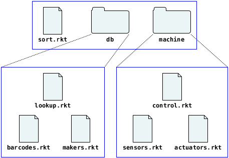

6.1 Module Basics
Each Racket module typically resides in its own file. For example, suppose the file "cake.rkt" contains the following module:
"cake.rkt"
#lang racket (provide print-cake) ; draws a cake with n candles (define (print-cake n) (show " ~a " n #\.) (show " .-~a-. " n #\|) (show " | ~a | " n #\space) (show "---~a---" n #\-)) (define (show fmt n ch) (printf fmt (make-string n ch)) (newline))
Then, other modules can import "cake.rkt" to use the print-cake function, since the provide line in "cake.rkt" explicitly exports the definition print-cake. The show function is private to "cake.rkt" (i.e., it cannot be used from other modules), since show is not exported.
The following "random-cake.rkt" module imports "cake.rkt":
"random-cake.rkt"
#lang racket (require "cake.rkt") (print-cake (random 30))
The relative reference "cake.rkt" in the import (require "cake.rkt") works if the "cake.rkt" and "random-cake.rkt" modules are in the same directory. Unix-style relative paths are used for relative module references on all platforms, much like relative URLs in HTML pages.
6.1.1 Organizing Modules
The "cake.rkt" and "random-cake.rkt" example demonstrates the most common way to organize a program into modules: put all module files in a single directory (perhaps with subdirectories), and then have the modules reference each other through relative paths. A directory of modules can act as a project, since it can be moved around on the filesystem or copied to other machines, and relative paths preserve the connections among modules.
As another example, if you are building a candy-sorting program, you might have a main "sort.rkt" module that uses other modules to access a candy database and a control sorting machine. If the candy-database module itself is organized into sub-modules that handle barcode and manufacturer information, then the database module could be "db/lookup.rkt" that uses helper modules "db/barcodes.rkt" and "db/makers.rkt". Similarly, the sorting-machine driver "machine/control.rkt" might use helper modules "machine/sensors.rkt" and "machine/actuators.rkt".

The "sort.rkt" module uses the relative paths "db/lookup.rkt" and "machine/control.rkt" to import from the database and machine-control libraries:
"sort.rkt"
#lang racket (require "db/lookup.rkt" "machine/control.rkt") ....
The "db/lookup.rkt" module similarly uses paths relative to its own source to access the "db/barcodes.rkt" and "db/makers.rkt" modules:
"db/lookup.rkt"
#lang racket (require "barcode.rkt" "makers.rkt") ....
Ditto for "machine/control.rkt":
"machine/control.rkt"
#lang racket (require "sensors.rkt" "actuators.rkt") ....
Racket tools all work automatically with relative paths. For example,
racket sort.rkt
on the comamnd line runs the "sort.rkt" program and automatically loads and compiles required modules. With a large enough program, compilation from source can take too long, so use
raco make sort.rkt
to compile "sort.rkt" and all its dependencies to bytecode files. Running racket sort.rkt will automatically use bytecode files when they are present.
See raco make: Compiling Source to Bytecode for more information on raco make.
6.1.2 Library Collections
A collection is a set of installed library modules. A module in a collection is referenced through an unquoted, suffixless path. For example, the following module refers to the "date.rkt" library that is part of the "racket" collection:
#lang racket (require racket/date) (printf "Today is ~s\n" (date->string (seconds->date (current-seconds))))
When you search the online Racket documentation, the search results indicate the module that provides each binding. Alternatively, if you reach a binding’s documentation by clicking on hyperlinks, you can hover over the binding name to find out which modules provide it.
A module reference like racket/date looks like an identifier, but it is not treated in the same way as printf or date->string. Instead, when require sees a module reference that is unquoted, it converts the reference to a collection-based module path:
First, if the unquoted path contains no /, then require automatically adds a "/main" to the reference. For example, (require slideshow) is equivalent to (require slideshow/main).
Second, require implicitly adds a ".rkt" suffix to the path.
Finally, require treats the path as relative to the installation location of the collection, instead of relative to the enclosing module’s path.
The "racket" collection is located in a directory with the Racket installation. A user-specific directory can contain additional collections, and even more collection directories can be specified in configuration files or through the PLTCOLLECTS search path. Try running the following program to find out how your collection search path is configured:
#lang racket (require setup/dirs) (find-collects-dir) ; main collection directory (find-user-collects-dir) ; user-specific collection directory (get-collects-search-dirs) ; complete search path
6.1.3 Adding Collections
Looking back at the candy-sorting example of Organizing Modules, suppose that modules in "db/" and "machine/" need a common set of helper functions. Helper functions could be put in a "utils/" directory, and modules in "db/" or "machine/" could access utility modules with relative paths that start "../utils/". As long as a set of modules work together in a single project, it’s best to stick with relative paths. A programmer can follow relative-path references without knowing about your Racket configuration.
Some libraries are meant to be used across multiple projects, so that keeping the library source in a directory with its uses does not make sense. In that case, you have two options:
Add the library to a new or existing collection. After the library is in a collection, it can be referenced with an unquoted path, just like libraries that are included with the Racket distribution.
Add the library to a new or existing PLaneT package. Libraries in a PLaneT package are referenced with a path of the form (planet ....) path. See PLaneT: Automatic Package Distribution for more information on PLaneT.
The simplest option is to add a new collection. You could add a new collection by placing files in the Racket installation or one of the directories reported by (get-collects-search-dirs). Alternatively, you could add to the list of searched directories by setting the PLTCOLLECTS environment variable; if you set PLTCOLLECTS, include an empty path in by starting the value with a colon (Unix and Mac OS X) or semicolon (Windows) so that the original search paths are preserved. Finally, instead of using one of the default directories or setting PLTCOLLECTS, you can use raco link.
The raco link command-line tool creates a link from a collection name to a directory for the collection’s modules. For example, suppose you have a directory "/usr/molly/bakery" that contains the "cake.rkt" module (from the beginning of this section) and other related modules. To make the modules available as a "bakery" collection, use Instead of installing a single collection directory, the --root or -d flag for raco link can install a directory that contains collections, much like adding to PLTCOLLECTS.
raco link /usr/molly/bakery
Afterward, (require bakery/cake) from any module will import the print-cake function from "/usr/molly/bakery/cake.rkt".
To make a collection name different from the name of the directory that contains the collection’s modules, use the --name or -n option for raco link. By default, raco link installs a collection link only for the current user, but you can supply the --installation or -i flag to install the link for all users of your Racket installation.
See raco link: Library Collection Links for more information on raco link.
If you intend to distribute your library collection to others, choose the collection name carefully. The collection namespace is hierarchical, but (unlike PLaneT) the collection system has no built-in feature to avoid conflicts from different producers or different versions. Consider putting one-off libraries under some top-level name like "molly" that identifies the producer. Use a collection name like "bakery" when producing the definitive collection of baked-goods libraries.
After your libraries are put in a collection you can still use raco make to compile the library sources, but it’s better and more convenient to use raco setup. The raco setup command takes a collection name (as opposed to a file name) and compiles all libraries within the collection. In addition, it can build documentation for the collection and add it to the documentation index, as specified by a "info.rkt" module in the collection. See raco setup: Installation Management for more information on raco setup.